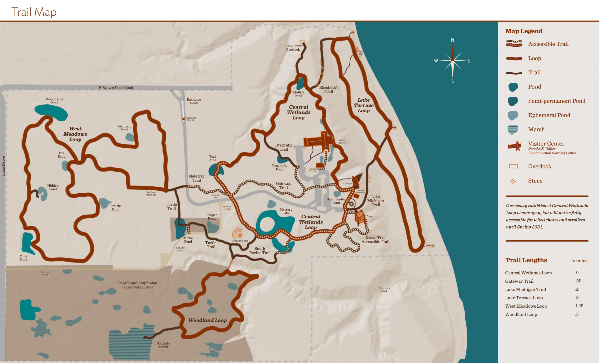

Hiking Trails
The best way to experience the abundance of nature at Schlitz Audubon is to hike the trails. Our offering includes beautiful nature hikes, birding trails, wheelchair-accessible trails, and more. In every season, our 185 acres offers incredible views of flora and fauna.
Trail Difficulty
Central Wetlands Loop: Medium Difficulty
Gateway Trail: Easy Difficulty
Lake Michigan Trail: Easy Difficulty
Lake Terrace Loop: Medium Difficulty
West Meadows Loop: Hard Difficulty
Woodland Loop: Easy Difficulty